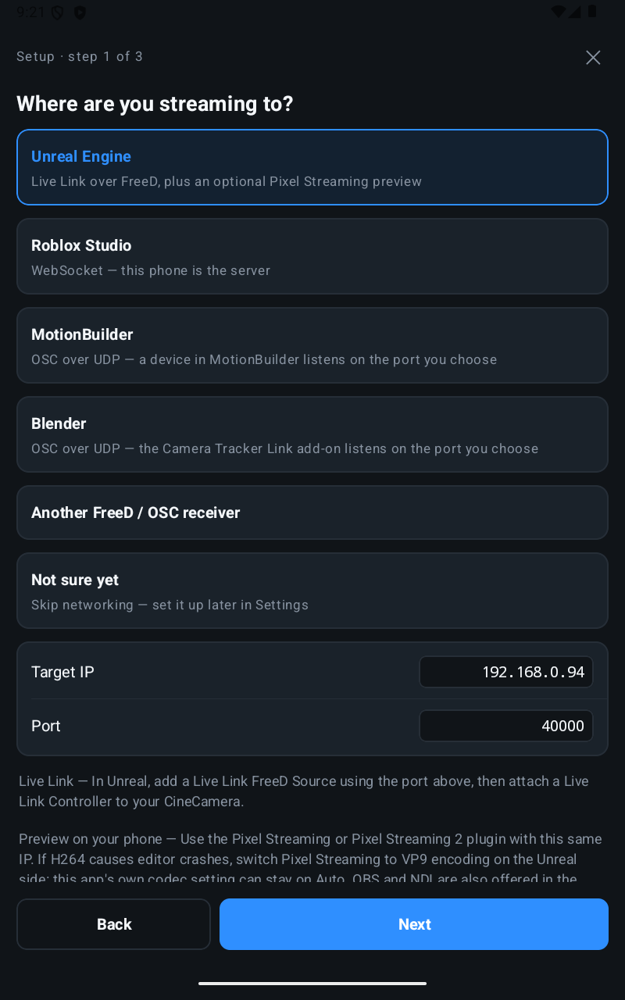
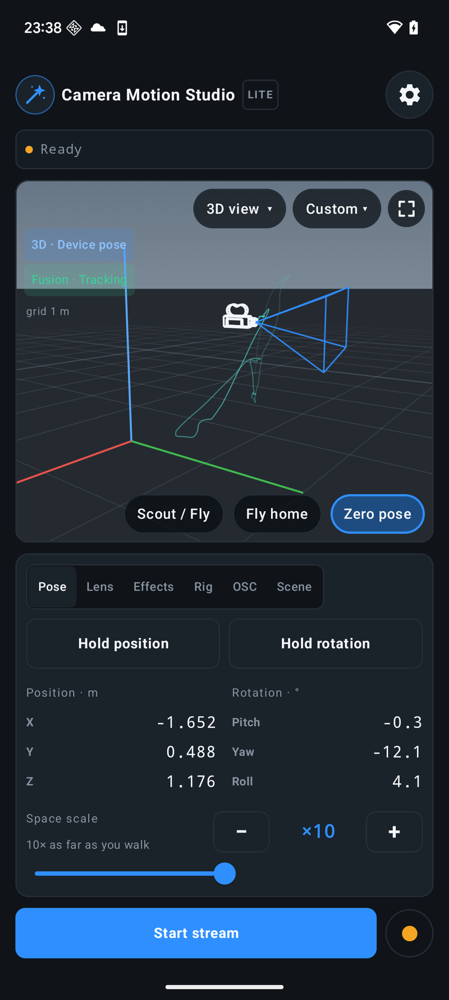
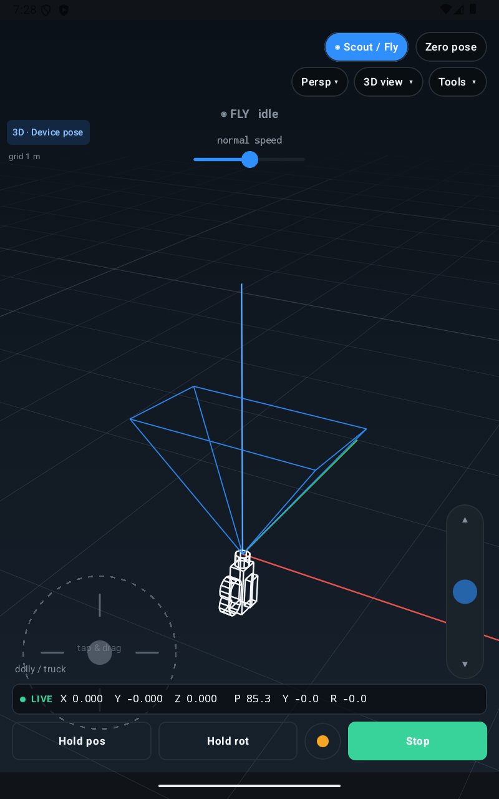
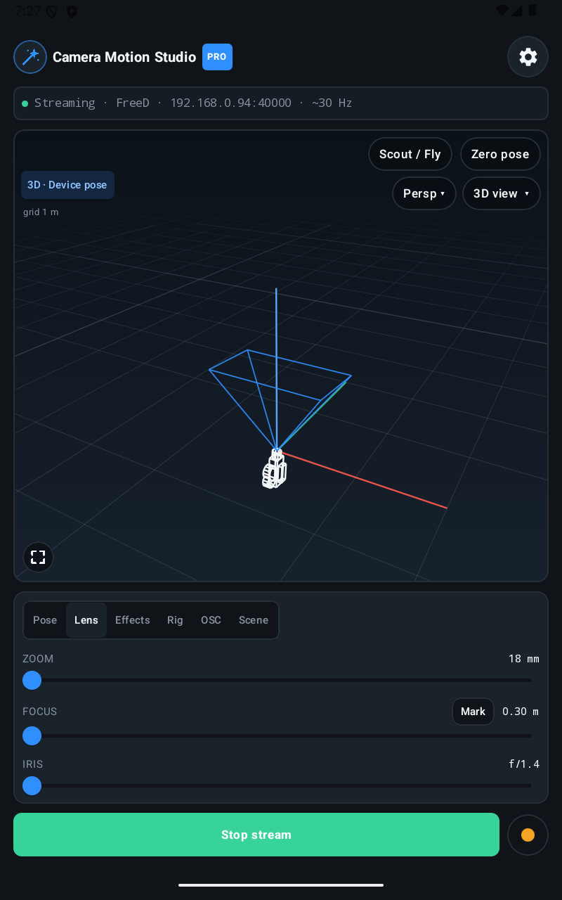
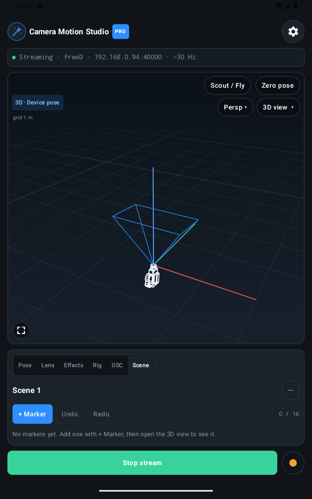
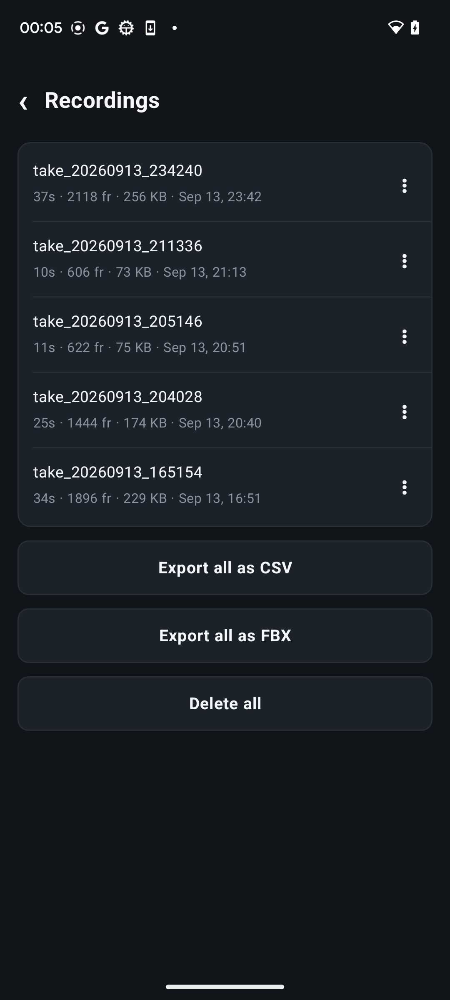

Camera Motion Studio
Turn your Android phone into a virtual camera for Unreal Engine, Blender, MotionBuilder, and Roblox Studio. Walk a shot, fly beyond the room, shape the camera feel, and keep the take.
Learn how the app works Read the setup and connection guidesFirst connection
From phone to scene.
- Install the appGet Camera Motion Studio from Google Play and install it on an Android 13+ phone.
- Choose your destinationChoose your engine or animation tool. The setup wizard helps configure tracking, camera motion, lens calibration, and the connection; the guide covers the receiver setup.
- Connect and movePut phone and computer on the same network. For FreeD or OSC, enter the computer's address on the phone. For Roblox, start the phone server and enter its address in Studio.

Track and see
A camera you can pick up and move.
Walk around a virtual set to find the framing for a previs shot, animation, or game cinematic. ARCore tracks position and rotation; IMU mode uses the phone's motion sensors for orientation. Re-centre with Zero, or hold position or rotation while you adjust the shot.
- ARCore 6DoF and IMU tracking
- Simple, trackable, and printed-marker anchors
- Offline 3D preview with camera path, lens frustum, and depth-of-field planes

Shape the movement
Give every move a camera feel.
Scout / Fly lets you dolly, truck, and rise through a virtual scene while the phone aims the camera. With Pro, use Smooth to soften motion or a virtual rig to add weight and follow-through. Layer in shake, impact, punch zoom, or breathing effects to shape the shot.
- Shove or joystick fly controls
- Smooth, Operator, Gimbal, Steadicam, and Fly motion options with Pro
- Bluetooth or USB controller input, with optional joystick look

Frame and focus
The lens and scene are in your hands.
Pull zoom, focus, and iris from the same screen as the camera. Calibrate focal length, focus distance, and f-stop, then use lens presets for repeatable changes. Assign a scene marker as Focus to follow its distance or Aim to guide the camera toward it.
Check the lens and depth of field in the built-in 3D view, or bring the rendered picture back through Unreal Pixel Streaming, OBS WHIP, or NDI to frame the scene on the phone.

Work with the scene
Ride with the subject. Keep control of the shot.
Use a Ref marker to carry the camera with a moving subject or vehicle, following its position or its position and heading. Move the phone to operate the shot around that reference. One marker can be Ref, Aim, and Focus together.
Bring scene markers from your desktop tool to the phone. With Pro OSC buttons, trigger supported play, stop, and record commands without returning to the computer.
Current Blender, MotionBuilder, and Roblox receivers support reference-relative camera motion. Update the app and receiver together; supported controls vary by tool.
Check your receiver's workflow
Your pipeline
Move a camera where the work happens.
Stream live pose and lens data over FreeD, OSC, or WebSocket. Record a take on the phone, then export or replay it when the live session is over.
Browse the user guidesIn the app
Preview and keep the shot.
Return video helps you frame the scene. Local recording keeps the camera motion even when a network packet goes missing.

Keep the take
Record first. Refine later.
Keep unlimited local takes, even on Lite, independently of network delivery. Export CSV, or use Pro to take an FBX camera into your animation workflow, bring Roblox JSON into Camera Paths, or replay a take to a live receiver. Where available, choose As streamed to retain the rig or look-at result, or Own motion to work from the underlying move. Pro also offers smooth export.
Start free
Try a shot, then build the workflow.
| Capability | Lite | Pro |
|---|---|---|
| Tracking, lens, 3D view, Scout / Fly, effects, markers and controller input | Included | Included |
| Live streaming | One destination, up to 30 Hz | Up to 60 Hz; multiple UDP destinations |
| Pose streaming session | 5 minutes | Unlimited |
| Camera rigs and motion smoothing | — | Included |
| Local recording | Unlimited length and count | Unlimited length and count |
| Export and playback | CSV export | CSV, FBX, Roblox JSON; smooth export and playback |
| OSC remote buttons | — | Included |
Pro is available as a monthly subscription or one-time Lifetime purchase through Google Play.
Android 13 or newer. Position tracking requires an ARCore-capable device and Google Play Services for AR. IMU mode tracks orientation; enter or fly the position. ARCore pauses in the background and can drift or take time to recover after camera loss. FBX and NDI may not be available in every app version.
Available on Google Play
Take the camera for a walk.
Install the Android app from Google Play, follow a connection guide, and see how Camera Motion Studio fits your scene.
Feedback: contact@techstory.org.uk